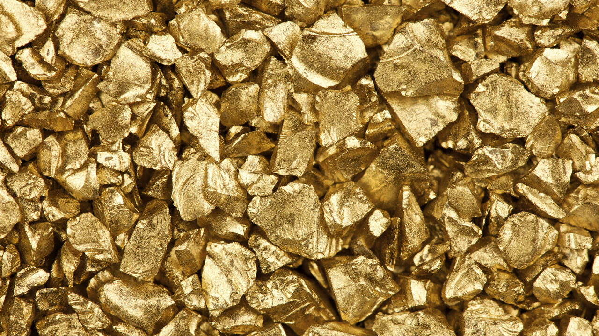

Sample Blog Post
September 27, 2021 by Dayna-Ashley Roberts
Do you like panning for gold? This last winter, a team of eight rugged mountain men trekked through howling winds and blinding snow into the most remote area of Alaska. The goal: to hopefully find some gold. After two months of crushing disappointment, this group of prospectors stumbled upon the biggest find of their lives! Three weeks later, the team emerged to tell their story. In this article, I'll tell you all about it. It’s been a long journey but 16 months later we now get 250,000 pageviews to our site per month. Hard rock gold mining extracts gold encased in rock, rather than fragments in loose sediment, and produces most of the world's gold. Sometimes open-pit mining is used, such as at the Fort Knox Mine in central Alaska. Other gold mines use underground mining, where the ore is extracted through tunnels or shafts.
Gold is a chemical element with the symbol Au (from Latin: aurum) and atomic number 79, making it one of the higher atomic number elements that occur naturally. In a pure form, it is a bright, slightly reddish yellow, dense, soft, malleable, and ductile metal. Chemically, gold is a transition metal and a group 11 element. It is one of the least reactive chemical elements and is solid under standard conditions. Gold often occurs in free elemental (native) form, as nuggets or grains, in rocks, in veins, and in alluvial deposits.